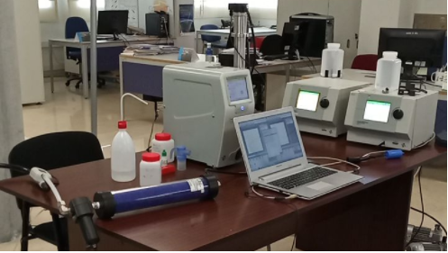

LibreMask is an ICU grade mask that uses breathing filters, HMEs and HMEFs filters in order to achieve a filtering efficiency superior to N95 or FFP2 masks.
It has been developed by a group of spanish citizen researchers, with the help of a number of companies that joint under Coronavirus Makers[1] movement.
Libremask design consists of a mask made by hot-press or mould injection with silicone or santoprene, removing the haveacs of 3D printed materials, and a standard breathing filter, available in hospitals. These filters offer greater than N95 (FFP2) filtering capability, shielding the most penetrating aerosol size - 300nm - in comparison to surgical masks that offer shielding to micron sized aerosol. These filters even outperform conventional N95 (FFP2) masks with specificity to virus filtration as reported by the manufacturers, and by conventional aerosol filtration tests described below.
It is based on the “ Resusable Elastomeric Respirator “proposed by Boston Children’s Hospital and Harvard Medical School.[6]
You can copy, modify and reuse all this material in part or totality as long as the resulting product is maintained with the same open hardware license. The mask is not certified, use it at your own responsibility.
Following the recommendations from the Spanish National Research Council (CSIC) [7], in the pandemic context, we replicated the experimental setup thanks to the Interuniversity Institute for Earth System Research in Andalusia[8], at the University of Granada[9], to measure filtering capabilities against the most penetrating aerosol size, 300 nm.
Generation of NaCl aerosol and size selection with an electrostatic column, at 300 nm-size. Aerosols are counted before and after the filter with two particle counters at the same time, at 1.5 liters per minute.
The mask was tested in a clean room with laser illumination of aerosols and high speed camera recording, to test aerosol leakage, resulting in better performance than FFP3 masks with exhalation valve.
Along with the test of the LibreMask, several other materials were tested to understand their filtering efficiency. Test filtering efficiency was tested with 300nm particles and 1.5l/min flow.
| Component under test | Filtering efficiency |
|---|---|
| FFP3 mask | 99.99±0.01% |
| HME (breathing filter) | 99.99±0.01% |
| HME (breathing filter) used for 5h30m with 30m of intense physical activity | 99.67±0.01% |
| Surgical mask | 75.9±0.8% |
| Nori seaweed | 69±3% |
| House cleaning wipe | 31±6% |
| Double layer dust wipe | 50±10% |
| Polyester 94 g/cm2 | 50±10% |
Complete results of this trials are available in "Material filtering efficiency under 300nm particles. Aerosol exposition to SARS-COV-2".[10]
LibreMask is libre open source hardware. You are allowed to copy, modify and study the manufacturing files. Moreover, you are allowed to use the manufacturing files to create your own LibreMask
While LibreMask has been tested, we cannot warrant that the use of a manufactured LibreMask without controlled means protects you against coronavirus, or other airborne diseases.
Hereby,the reponsability of the use of LibreMask is only yours. In case you are buying it, ask your provider for a certificate of conformity that states the filtering efficiency of the mask when equiped with a tested HME filter.
Libremask is composed of:
The following files are available to manufacture the mask :
Libremask is mould injected by industrial means, avoiding the use of 3D printing techniques for its manufacturing due to the porous properties of 3D printing objects.
Nevertheless, fabricating the mould by 3D printing and injecting silicone also avoids 3D printing problems thanks to the wettability between the liquid silicone and the 3D printed mould.
LibreMask uses a standard HME breathing filter Inter-Guard™, from Intersurgical[13] . The result of our tests are based on this HME filter, the decision to use this HME filter came as the availability of the product in Spain. Product datasheet claims a 99.99% filtering efficiency, which is consistent with the result of the trials performed in Universty of Granada
You can source locally the elastic strips. They should firmly press the mask against the face of the wearer, without leaving any space that could result in a loss of hermeticity. In the case the mask is not hermetic, the mask will not provide any filtering efficiency.
Assuming the mask is sterilized , a breathing filter needs to be press-fit installed on the mask, and the strips need to be checked and replaced by the strip of your convenience if they show signs of wear. Ensure it is air-tight on your face by blocking the filter with your hand and breathing gently, the mask should resist both gentle inhalations and exhalations.
Given the results of filtering capability over time of the filters, we envisage that one breathing filter is used per working shift. After the working shift, the filter should be trashed and the material of the mask enables its sterilization by any conventional method, ranging from autoclave to immersion in diluted bleach, or wiped with alcohol.
During the research several trials has been performed prior to achiving the final result. As described above this lines, the final result is a mould injected full hermetical silicone grade medical mask. Which equiped with HME Inter-Guard™ HME, provides a filtering efficiency of 99.99% against 300nm aerosols.
To achieve medical requeriments, the mask is mould injected in medical grade silicon. However, during the development several trials were performed with 3D printed parts. The result of 3D printing techniques is usually porous, as a result, injection is needed to achieve a full hermetic mask.
In each stage prior to final version, the masks were distributed to health staff in hospitals accross Spain to get direct feedback, and to improve with their suggestions the mask, up to the final prototype.


Press release can be found here
For further information contact Miguel Ángel Fernández